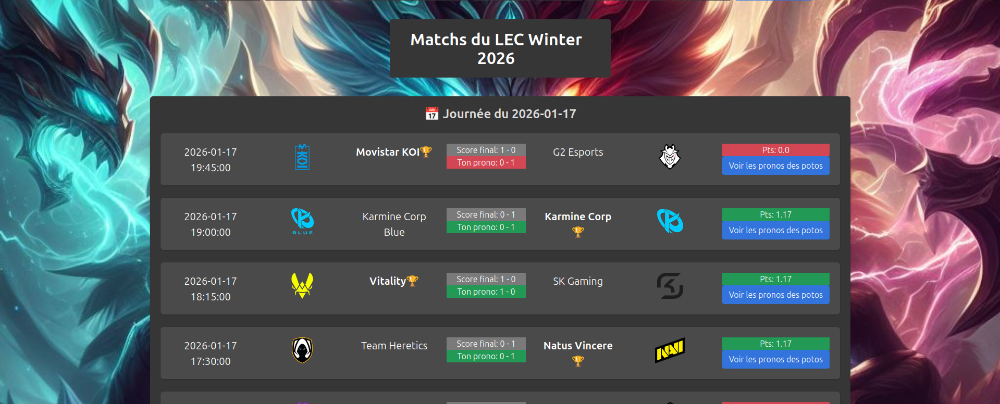

Lolprono — Webapp de pronostics League of Legends

Projet réalisé en équipe (3 personnes ou plus), né d'une envie simple : proposer à un groupe d'amis un outil fiable de pronostics sur les matchs compétitifs de League of Legends, à la manière d'un "mon petit prono". L'application permet de s'inscrire, de suivre plusieurs compétitions, de pronostiquer les résultats jusqu'au début de chaque match, et de comparer son classement à celui des autres joueurs. Contrairement à un projet de formation classique, celui-ci a été conçu pour un usage réel — il est aujourd'hui utilisé régulièrement par le groupe d'amis pour lequel il a été créé.
Je n'ai pas eu à manipuler de données externes pour ce projet, puisque les informations sur les matchs et les compétitions étaient la partie d'un coauteur du projet. J'avais donc à collecter des données grâce à des formulaires remplis par les utilisateurs sur une page pronos et à les enregistrer correctement dans la base de données SQLite. Ensuite, avec ces données, j'ai pu calculer les points de chaque utilisateur et les afficher sur la page classement.
Travail réparti en équipe sur les différentes pages de l'application. Mon périmètre :
- Page "Pronos" — mise en forme de l'interface et développement de la fonction de récupération des pronostics de l'utilisateur.
- Page "Classement" — mise en page et développement de la fonction de calcul des points par utilisateur sur une compétition.
- Page "Voir les pronos des potos" — mise en page et calcul du tableau comparatif des points entre les membres du groupe.
Stack technique commune à l'équipe : Python/Flask côté serveur, SQLite pour la base de données, tests automatisés avec pytest, séparation des champs d'actions et versionnage sur git, déploiement sur un serveur distant.
L'application est en usage régulier par le groupe d'amis pour lequel
elle a été conçue, sur plusieurs compétitions suivies. Les fonctions de
classement et de comparaison que j'ai développées sont au cœur de
l'usage réel de l'app : c'est ce qui crée la dynamique de "compétition
entre potes" recherchée au départ.
D'autre part, les retours des utilisateurs ont rendus ce projet vraiment vivant
et m'ont permis de me confronter à des problématiques réelles de développement.
J'ai dû corriger des bugs, améliorer l'ergonomie et la lisibilité de certaines pages,
et proposer des améliorations pour les prochaines versions.
Si je devais me replonger dans ce projet, je chercherais un autre moyen de récupérer les données des matchs et des compétitions. En effet, l'API utilisée aujourd'hui a donné lieu à des doublons dans les matchs récoltés ce qui a nui à l'expérience utilisateur. Cela me permettrait d'explorer d'autres outils et d'améliorer la fiabilité de l'application.